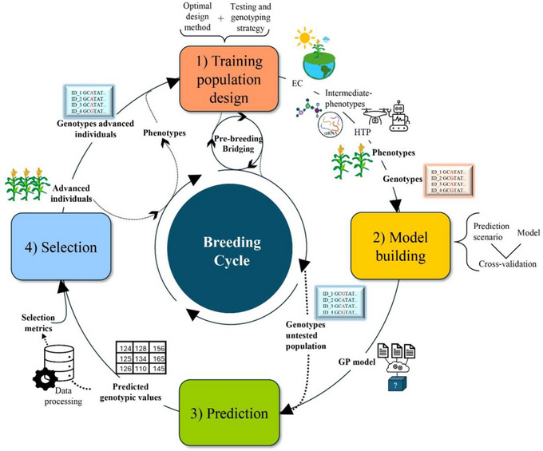
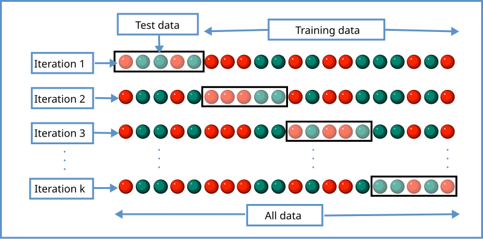
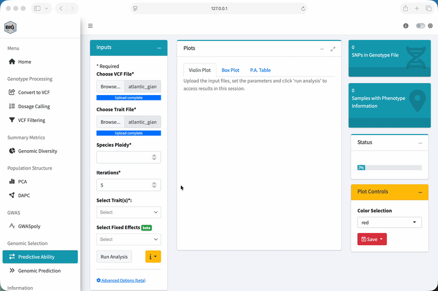

Module 4: Genomic Selection
Optional self-study
Lesson at a glance
- Time: optional self-study, about 30 minutes plus computation
- Start with: local BIGapp, the filtered VCF, and phenotype CSV
- Do: distinguish model evaluation from generation of predictions
- Save: validation results, predictions, settings, and sample definitions
This module is optional self-study. If there is time in the guided session, work through the concepts and Predictive Ability exercise. Otherwise, complete it after the workshop using your local BIGapp installation.
What is Genomic Selection?
Genomic selection uses markers across the genome to predict genetic merit for a trait. Unlike GWAS, we are not trying to interpret one significant locus at a time. We use information across many markers to predict candidates.
The Traditional Problem
To evaluate a candidate as a parent, we may need to make crosses, grow offspring, measure the trait, and estimate breeding value from those records. For some traits and species, that can take years.
The Genomic Approach
With genomic selection, we:
- genotype the samples
- train a model using samples with both genotypes and phenotypes
- validate how well the model predicts held-out samples
- use the fitted model to predict genotyped candidates

Figure: Escamilla et al. (2025), open-access article, licensed CC BY-NC-ND.
Once we have a validated model, we can generate predictions for genotyped candidates before collecting the target phenotype on every candidate. Those predictions supplement, rather than replace, the breeding program’s field and experimental evidence.
How Does It Work?
The Basic Idea
The training data contain both marker dosages and observed phenotypes. A genomic prediction model uses marker-based relationships and estimated effects to predict the trait or genetic merit of other genotyped samples.
The exact model is more complicated than adding a few known marker effects, but a useful mental model is:
genotypes + phenotypes in the training set
|
v
fitted prediction model
|
v
predictions for genotyped candidatesWhat We Need
| Component | What it contains | How it is used |
|---|---|---|
| Genotypes | Marker dosages for training samples and candidates | Builds genomic relationships and prediction inputs |
| Phenotypes | Trait records for training samples | Provides the response used to fit and validate the model |
| Training set | Samples with both genotypes and phenotypes | Fits the model |
| Target set | Samples for which we want predictions | Defines the actual prediction problem |
What Affects Prediction?
Prediction depends on the data and the decision we want to make:
| Factor | Why it matters |
|---|---|
| Phenotype quality | No model can recover information that is not present in the trait records |
| Training-target relationship | Predictions usually transfer differently as the target becomes less represented by the training data |
| Trait architecture | Marker information can capture traits differently depending on the number and distribution of genetic effects |
| Environments and fixed effects | Training records and future candidates need comparable, correctly modeled context |
| Genotyping and marker overlap | Training and target data must use compatible markers, dosage coding, sample IDs, and ploidy |
| Validation design | The held-out samples need to represent the way predictions will actually be used |
There is no universal predictive-ability rating or minimum training-set size that applies to every breeding decision. We need to compare the model with the program’s current selection process for the intended target samples.
Running Genomic Selection in BIGapp
BIGapp separates model evaluation from the generation of predictions:
| BIGapp feature | Question it answers |
|---|---|
| Predictive Ability | How does the model perform on phenotypes withheld during cross-validation? |
| Genomic Prediction | What predicted phenotypes and EBVs does the fitted model return? |
Start with Predictive Ability to evaluate the model under a relevant validation design. Use Genomic Prediction to create predictions only after the inputs, intended target, and validation evidence have been defined.
Feature 1: Predictive Ability
How Cross-Validation Works
BIGapp uses five-fold cross-validation. It splits the phenotyped samples into five groups, trains with four groups, predicts the fifth, and continues until every group has been held out. Predictive ability is the Pearson correlation between the observed and predicted values.
Repeating the five-fold split across iterations shows how much the result changes with fold assignment.

Figure: K-fold cross validation, Wikimedia Commons, CC BY-SA 4.0.
{kind=link}
The important part is not just the number of folds. The held-out samples should mimic the prediction problem we actually care about as closely as the available data allow. Read Cross-validation accuracy for genomic prediction before using this result in a breeding decision.
Run Predictive Ability
- Select Predictive Ability under Genomic Selection.
- Under Choose VCF File, upload the filtered VCF from Module 1.
- Under Choose Trait File, upload
atlantic_giant_pumpkin_diversity_phenotypes.csv. - In Trait File Options, select
NAandSample_ID, review the preview, and select Save. - Set Species Ploidy to
2. - Set Iterations to
5for this short demonstration. - Under Select Trait(s), choose
Fruit_Weight_lbs. - Leave fixed effects and Advanced Options (beta) unchanged for the core exercise.
- Select Run Analysis.

Understand the Output
- Violin Plot: shows the distribution and density of correlations across cross-validation results.
- Box Plot: summarizes the median, spread, and possible outliers.
- P.A. Table: records predictive ability for each iteration and selected trait.
Do not reduce this output to one fixed expected correlation. Values can change because fold assignment is random. Save the full distribution, iteration count, method, relationship matrix, and samples included.
Feature 2: Genomic Prediction
Two Ways to Use It
With the default single-VCF workflow, BIGapp fits the model using samples that have phenotypes and returns predictions for samples in that VCF. Under Advanced Options (beta), a separate prediction VCF can be supplied for a distinct target set.
Before using a separate prediction VCF, check that the training and target files use compatible markers, allele coding, sample IDs, and ploidy.
Run Genomic Prediction
- Select Genomic Prediction under Genomic Selection.
- Upload the same filtered VCF and phenotype CSV.
- In Trait File Options, select
NAandSample_ID, then save. - Set Species Ploidy to
2. - Under Select Trait, choose
Fruit_Weight_lbs. - Leave fixed effects and Advanced Options (beta) unchanged for the core exercise.
- Select Run Analysis, review the confirmation, and proceed.
- Inspect Predicted Pheno Table and EBVs Table.
- Use Save Files to retain the output and analysis settings.
Understand the Output
The Predicted Pheno Table contains model predictions on the trait scale used for fitting. The EBVs Table contains model-based estimates of genetic merit under the selected settings.
An EBV is not an observed phenotype or a permanent property of the sample. It depends on the training data, model, trait definition, and target population. Check sample IDs, missing phenotypes, and the direction of selection before interpreting a ranking.
Using the Results
Predictions can help us prioritize candidates, plan additional phenotyping, or compare possible parents. But a ranking is useful only if the validation represents how we plan to use the model.
Random folds can look better than the real prediction problem when close relatives occur in both training and test folds, or when future predictions target a different cycle, environment, or population.
Before making a decision, ask:
- What future samples or breeding cycle should the validation mimic?
- Could close relatives occur in both training and test folds?
- Which fixed effects will be known when predictions are made?
- What current selection process should the model be compared with?
- What new phenotypes will be collected to monitor or update the model?
Practical Considerations
Training Data Design
The training set should represent the target material and trait range well enough for the intended decision. Accurate phenotypes, consistent sample identity, appropriate environmental information, and compatible genotypes all matter. Adding records is useful when those records add relevant information, not simply because the row count becomes larger.
When Might Genomic Prediction Help?
It may be useful when phenotyping is expensive, slow, seasonal, destructive, or limited to later stages, and when the program can validate predictions for the candidates it needs to select.
It may add less value when the target trait is already easy and inexpensive to measure at the decision stage, the training records do not represent future candidates, or the validation design does not match deployment.
Exercise
Part 1: Assess Predictive Ability
- Run Predictive Ability for
Fruit_Weight_lbswith five iterations. - Compare the violin plot, box plot, and P.A. table.
- How much do correlations vary across iterations?
- What target population or future cycle does this validation represent?
Part 2: Generate Predictions
- Run Genomic Prediction for
Fruit_Weight_lbs. - Confirm that Predicted Pheno Table and EBVs Table are available.
- Compare the highest and lowest ranked samples.
- Identify which information you would need before using that ranking in a real selection decision.
The Predictive Ability output contains a distribution of correlations rather than one guaranteed value. Record the values from your run because fold assignment is random.
Genomic Prediction returns a Predicted Pheno Table and an EBVs Table for Fruit_Weight_lbs. Numerical results depend on the fitted data and settings. The simulated regional pattern is part of the teaching dataset, not a recommendation to select samples from a particular region.
A defensible decision would also require a validation design that represents future candidates, reliable phenotypes, compatible genotype coding, the known fixed effects available at prediction time, and a comparison with the program’s current selection process.
Key Takeaways
- Genomic selection uses genome-wide marker information to predict genetic merit.
- Predictive Ability evaluates held-out predictions under repeated five-fold cross-validation.
- Genomic Prediction creates predicted-phenotype and EBV tables from a fitted model.
- Validation should represent the samples and decisions for which the model will be used.
- There is no universal correlation rating or minimum training-set size for every program.
- Save the inputs, sample definitions, iterations, model settings, and complete output distribution.
You Have Completed the Workshop
You have worked through the core BIGapp sequence:
- Data quality control: filter uncertain genotype cells, markers, and samples.
- PCA: explore genetic structure and possible outliers.
- GWASpoly: find and diagnose marker-trait associations.
- Genomic selection: evaluate prediction and generate model-based estimates.
From here, try the workflow with a carefully documented dataset from your own program, or return to the relevant module when you need to review an analysis decision.
Resources
- BIGapp repository and issue tracker
- BIGapp tutorials
- Cross-validation accuracy for genomic prediction
Finish: Review the dataset guide, or return to the workshop overview.